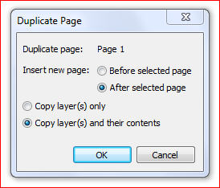

Как скопировать объект с одной страницы на другую
dEar / 28.01.2010, 23:15/00:41
Форум:
Собственно, в теме и вопрос... Можно ли обойтись при этом без буфера обмена.
С уважением, dEar
Собственно, в теме и вопрос... Можно ли обойтись при этом без буфера обмена.
С уважением, dEar
Попробуй Shape.CopyToLayer, но не уверен.
Да, можно.
Но сначала настройте в: Инструменты-Параметры-Документ-Общие смещение копии по X и по Y равным нулю. Не забудьте сохранить как настройки по умолчанию, ибо это всегда удобно при создании каких либо рамок, полей, концентричных окружностей в печатях, не надо одну рамку центрировать относильно другой, копия может быть трансформирована, но останется концентричной относительно исходной.
1. Просто делаете дубль объекта (Ctrl+ D);
2. Добавляете страницу, или переходите на нужную страницу;
3. В диспетчере объектов просто перетаскиваете дублированный объект на нужную страницу.
Желаю успехов.
Solowejka, речь идёт о программировании на VBA, а не про пользовательский интерфейс. Внимательнее быть нужно! :)
А для чего нужно программирование если есть встроенная функция!
Можно комбинацию клавиш добавить!

Des425, для того что это функция (я имею виду вопрос) скорее всего является частью какого то автоматического процесса (большого или маленького), и юзанье клавиш и интерфейса в эту логику никак не укладывается! :)
Sancho прав - даная функция должна использоваться не сама по себе, а внутри другой программы.
Но, к сожалению, последних две недели навалилось столько работы, что не могу попробовать Shape.CopyToLayer... Как только смогу - отпишу результат
Таже проблема , пробовал ActiveSelection.CopyToLayerAsRange выдаёт ошибку ...может есть функция очистки буфера ?
Abarmot, а разве поиск не работает в менеджере объектов?
Clipboard.Clear
Sub Clear()
Description
Member of Clipboard
The Clear method removes any and all data from the system Clipboard. The Clipboard should be cleared after large files, no longer needed, are pasted into a document. Clearing the Clipboard of these large files frees up any system resources that the file is currently using in the Clipboard.
VBA example
The following VBA example pastes the current contents of the system Clipboard in the active document and uses the Clear method to remove the data from the Clipboard.
Sub ClipboardClear()
ActiveLayer.Paste
Clipboard.Clear
End Sub
Sancho, спасибо , просто из головы справка вылетела .
Abarmot, F2 в VBA редакторе, а там выделив нужную команду, жать F1 :)